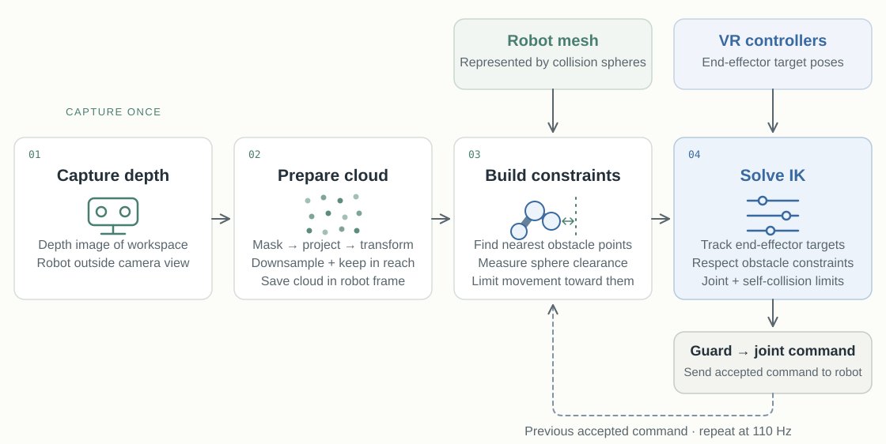
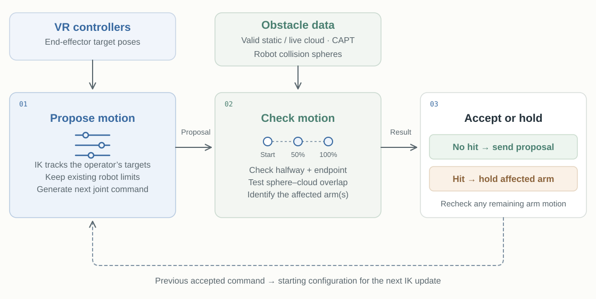

Technical report
Real-Time External Collision Avoidance for Robot Teleoperation
Abstract
VR robot teleoperation requires the robot to follow continuously changing end-effector targets while maintaining clearance between its links and the surrounding environment. We present a real-time external collision-avoidance extension to an existing inverse-kinematics (IK) pipeline. Depth images are projected into a 3D point cloud and transformed into the robot’s coordinate frame, providing an obstacle representation without predefined object models. In the evaluated implementation, distances between mesh-fitted arm spheres and the cloud define local constraints within the IK optimization. These constraints limit motion toward nearby obstacles while preserving feasible motion away from or along their surfaces. Integrating avoidance into IK allows the solver to adjust the proposed motion, addressing the repeated stopping observed with post-IK collision rejection alone.
The perception pipeline supports live and static point-cloud modes. Live mode refreshes observed geometry from incoming depth frames and removes points belonging to the robot; static mode captures the scene once and reuses the cloud throughout operation. Live updates accommodate visible scene changes, whereas static mode avoids repeated cloud processing for a fixed workspace. Image-space masks allow selected scene regions to be included or excluded from collision checking. In the evaluated static-cloud setup, the lightweight collision-avoidance extension runs within a dual-arm IK loop at approximately 110 Hz, supporting real-time VR teleoperation.
1. Introduction
During VR teleoperation, the operator relies on a streamed camera feed to view the robot’s workspace. Judging depth and the distance between the robot and surrounding objects can be difficult through a headset, especially when the camera provides only a limited view. The system therefore needs to check for collisions as the operator moves the robot. These checks must be fast enough to keep up with the operator’s movements without slowing the robot’s response.
To address this problem, we develop an external collision-aware teleoperation pipeline that incorporates surrounding obstacles as constraints in inverse kinematics (IK). These constraints allow the solver to adjust the requested motion to maintain clearance from observed obstacles while following the operator’s end-effector targets, supporting safer teleoperation.
To capture the surroundings, we use a depth camera and convert its depth images into a 3D point cloud. The cloud records the positions of observed surfaces relative to the robot, allowing the system to check the arms against nearby objects without predefined object models. Segmentation masks applied in image space let selected regions be included or excluded, giving control over which parts of the scene are treated as obstacles.
We initially used a post-IK collision guard: the solver proposed a movement, and the guard rejected it if it intersected an obstacle. This left the arm frozen when the operator kept requesting a target beyond the obstacle, because the solver continued proposing movements that the guard rejected. Incorporating obstacle constraints into IK lets the solver adjust the motion before it reaches the guard, allowing feasible movement along obstacle surfaces or away from them. The guard remains as a final check.
The point cloud can be updated live or captured once. Live updates reflect visible changes in the workspace, but require repeated depth processing and removal of robot points from each cloud. A static cloud avoids this repeated processing and is useful when the workspace stays fixed, but cannot reflect changes after capture. In the evaluated static-cloud setup, the collision-avoidance extension is lightweight enough to run within the IK loop at approximately 110 Hz, supporting real-time teleoperation.
2. Methodology
The operator moves the VR controllers to specify the desired position and orientation of each robot end effector. These controller poses are mapped into the robot’s coordinate frame and passed to an inverse-kinematics (IK) solver. The solver computes joint commands that move the end effectors toward their targets while respecting the robot’s joint and motion limits. This loop repeats as the operator moves the controllers. Our implementation uses the existing Mink IK framework [1].
In a cluttered workspace, tracking these targets alone can bring the robot’s links into contact with nearby objects. To account for these obstacles, we explored two ways to add collision avoidance to the teleoperation loop:
- Constraints inside IK. Obstacle constraints are included in the IK problem, allowing the solver to adjust the proposed motion while tracking the operator’s end-effector targets.
- Post-IK collision guard. The IK solver first proposes a motion. A separate guard checks it for collisions before execution and holds the affected arm if a collision is detected.
2.1 External obstacle constraints inside IK
In this pipeline, the operator’s end-effector poses are the IK tracking targets. To account for obstacles, we compute the clearance between spheres representing the arms and points representing nearby surfaces. These clearances are converted into inequality constraints that limit how far the arms can move toward obstacles during each IK update. The current implementation uses a point cloud captured before teleoperation and reuses it throughout the session.

Perception: capture the workspace
We capture a depth image of the workspace using a depth camera, with the robot kept outside the camera’s view during capture. During teleoperation, we assume that only the robot’s arms move; the base, head, lift, and camera mount remain fixed. This keeps the transformation from the camera frame to the robot frame unchanged, allowing us to reuse a fixed static point cloud as long as the surrounding objects also remain stationary.
Preprocessing: build the collision representation
Depth values outside the valid range are discarded; in our case, this range is 0.15–3 m. An optional mask in depth-image space specifies which pixels to include in or exclude from collision checking. The mask can be created manually or generated by a segmentation model. The retained depths are projected into 3D using the camera intrinsics, then transformed into the robot frame using the camera pose. The obstacle points and robot geometry must be expressed in the same frame so that their relative positions and clearances can be calculated correctly.
The raw cloud contains many closely spaced points on the same surfaces. To reduce the number of distance calculations, we divide space into 10 mm voxels and retain one point from each occupied voxel. Points outside the arms’ reach are also removed, since they cannot affect the arm motions considered here. The remaining points are stored in a k-d tree, which lets us find nearby obstacle points quickly without searching the entire cloud at every IK update.
To compare this cloud with the robot, we approximate the robot’s shape using collision spheres fitted around its mesh. Each sphere is attached to a robot link and moves with it. This makes clearance calculations simpler: we can measure distances between spheres and nearby cloud points instead of checking every triangle in the robot mesh. We add padding to the robot spheres and give each cloud point a small radius to account for gaps between sampled points and uncertainty in the depth measurements and geometry.
IK input: turn clearance into constraints
Once the robot and obstacles have a collision representation, we calculate the gap between them. At each IK update, forward kinematics uses the modeled joint positions to locate the robot’s collision spheres. The k-d tree then finds the nearest obstacle point for each sphere. We subtract the sphere and obstacle-point radii from the distance between their centres to obtain the clearance between their represented surfaces.
Spheres far from obstacles do not need to restrict the next movement. We therefore activate constraints only when clearance falls below 50 mm and use at most the 128 closest spheres. This focuses computation on nearby obstacles and keeps the size of the IK problem bounded.
We use the MuJoCo robot model [2] to estimate how a small change in joint angles would move each collision sphere. This relationship, called a Jacobian, helps us identify movements that would bring the sphere closer to an obstacle.
We then limit movement toward that obstacle. As the gap gets smaller, less movement in that direction is allowed. At our minimum clearance of 10 mm, further movement toward the obstacle is blocked. If the sphere is already within this margin, we request a small step away. The IK solver considers these limits together with the operator’s target, joint limits, velocity limits, and self-collision constraints.
Motion generation: solve and repeat
The IK solver now considers two things together: moving the end effectors toward the operator’s targets and respecting the limits on robot motion. Mink expresses this as a quadratic program and uses DAQP to solve it. The resulting joint velocity is applied over one control period to obtain the next joint command. Near an obstacle, the constraints can reduce motion toward it while leaving movement along its surface or away from it available.
This process repeats at approximately 110 Hz. In the evaluated configuration, each update begins from the previous command accepted by the final collision guard. The cloud stays fixed, but the sphere positions, clearances, and constraints are recalculated as the modeled robot moves. This lets the solver respond to changing operator targets without rebuilding the environment representation.
A request to move away from an obstacle can sometimes conflict with other limits. If the solver cannot satisfy all requirements, it retries with the outward-movement requirement removed, while retaining the restriction against moving closer. If that attempt also fails, the robot is commanded to hold the starting configuration.
Each update produces only the next small movement, so a longer motion emerges from many successive IK steps. The solver may stop when reaching the target would require a different route around an obstacle; finding that route would require a separate path planner. Because the calculations use the modeled joint configuration, a physical arm that lags behind its commands can have a different clearance from the one predicted by IK.
2.2 Post-IK collision guard
In this approach, the IK solver first proposes a movement toward the operator’s target. A separate guard then checks that movement against the obstacle cloud before the command is sent to the robot. When used on its own, the guard does not add external obstacle constraints to IK; it decides which arm commands can be executed.

Perception: prepare the obstacle cloud
The depth projection, robot-frame transformation, and collision-sphere representation follow the same principles as the first pipeline. The guard can use a saved static cloud or a live cloud. In live mode, points belonging to the robot are removed using the current robot state so that the robot is not treated as an external obstacle.
For fast collision checks, the cloud is stored in a collision-affording point tree (CAPT), using the implementation released with VAMP [3]. This structure answers whether a robot sphere overlaps the cloud. A static tree is built once. For live clouds, a separate process builds new trees, and the guard receives the latest available tree in the background. The arm-control loop therefore does not wait for each depth frame to be processed.
IK output: propose the next movement
Before running IK, we save the modeled joint configuration. The solver then computes a candidate command using the operator’s target and the robot’s existing limits. Together, the saved configuration and the candidate define the movement that the guard must check. As in the first pipeline, the starting configuration in these runs is the previous accepted command.
Collision checking: inspect the movement between commands
Checking only the final pose could miss an obstacle encountered on the way there. The guard therefore samples configurations between the starting and candidate joint positions. The default setting checks halfway through the movement and at its endpoint. At each sample, forward kinematics places the collision spheres, and the CAPT tests them against the obstacle cloud. The sphere queries are grouped into batches to reduce overhead.
An overlap at either sample marks the corresponding arm’s movement for rejection. This checks the padded collision representation directly; it does not use the first method’s clearance-based movement limits or ask IK to find a different motion.
Execution: accept the command or hold an arm
The guard makes the execution decision separately for each arm. A proposal with no detected overlap is passed to the robot. If one arm would collide, its command is replaced with its starting configuration. The other arm may still move, but holding one arm changes their combined motion, so the remaining movement is checked again against both the cloud and the robot’s collision geometry. If that check fails, or both arms would collide, both arms are held.
The accepted configuration is sent to the robot and retained for the next IK update. A hold therefore means resending the starting joint command. The guard can reject a movement, but it cannot redirect the arm around an obstacle. This explains the freezing observed when IK repeatedly proposed a blocked movement. In the first pipeline, the same guard is retained as a final check after obstacle constraints have already influenced IK.
3. Experiments
We tested both pipelines on the physical robot with one operator in VR. The operator approached a shelf, pushed the end-effector targets toward obstacles, pulled back, and tried to reach into storage bins. We compared how the arms stopped and resumed motion, and whether the collision representation left enough room to pass through the opening.
3.1 Setup and measurements
The setup used two seven-joint RealMan RM75B arms, a head-mounted Intel RealSense D435 depth camera, and an NVIDIA Jetson AGX Orin running the control loop. The robot stood in front of a shelf with three open bins. Its base, head, lift, and camera mount stayed fixed.
Before teleoperation, we captured a depth image with the arms out of view. A mask selected the upper shelf beam, the bin fronts, and the lower beam as obstacles. After 10 mm voxel downsampling, the static cloud contained about 4,000 points. To reach into a bin, a hand had to pass through a gap approximately 25–27 cm high between the bin fronts and the upper beam.
We recorded five conditions: no active avoidance, constraints inside IK with a final guard, and the guard alone. We tested each avoidance pipeline with two robot representations:
- Mesh-fitted spheres: 1,398 small spheres, with radii of 1.6–4.5 cm, fitted around the arm meshes.
- Box-cover spheres: 49 larger spheres, with radii of 5.2–10.8 cm, enclosing the robot’s coarser collision boxes.
All conditions used a 110 Hz control loop, 3 mm sphere padding, a 12 mm radius around each obstacle point, and two guard samples per movement. The IK constraints used a 10 mm minimum clearance and activated within 50 mm. Each update started from the previous accepted command. In the baseline, the guard logged its checks but did not block commands.
- Clearance
- The smallest gap between the obstacle cloud and the padded arm spheres placed at the measured joint angles. We use the same mesh-fitted model to measure every run, even when the controller uses box-cover spheres. Negative values mean the padded model overlaps the cloud; they do not directly measure physical contact.
- Obstacle stop
- The operator holds the grip, the end effector is more than 3 cm from its target, and its speed stays below 1 cm/s for at least 0.3 s. The analysis attributes the blocked movement to an external-obstacle IK constraint or the guard. Stops caused by existing self-collision limits are excluded.
- Compute time
- IK solve time and complete control-cycle processing time, measured inside the control process.
3.2 What changed with collision avoidance?
With mesh-fitted spheres, constraints inside IK allowed the hands to reach into the bins without any guard holds. The guard alone kept measured clearance close to zero at the mapped surfaces, but sometimes left an arm stopped even when the operator requested a retreat. With box-cover spheres, both pipelines stopped farther from the shelf and neither allowed the hands to reach into a bin.
| Condition | Motion window (s) | Minimum clearance (cm) | Time overlapping the cloud (s) | Time stopped at an obstacle (s) | Median clearance while stopped (cm) |
|---|---|---|---|---|---|
| No avoidance | 42 | −2.98 / −3.08 | 27.65 / 16.95 | 0 / 0 | — |
| IK + guardMesh-fitted spheres | 40* | −0.17 / −1.93 | 0.22 / 0.60 | 4.3 / 2.1 | 0.9 / 0.9 |
| Guard onlyMesh-fitted spheres | 70 | 0.02 / −0.04 | 0 / 0.14 | 22.9 / 14.5 | 0.0 / 0.1 |
| IK + guardBox-cover spheres | 101 | 4.57 / 6.40 | 0 / 0 | 46.0 / 37.5 | 9.2 / 9.7 |
| Guard onlyBox-cover spheres | 62 | 7.79 / 9.33 | 0 / 0 | 9.7 / 16.0 | 9.9 / 10.0 |
* Motion analysis for IK with mesh-fitted spheres uses the first 40 s. The remainder of that recording was affected by the existing arm-to-arm self-collision check. Zero obstacle-stop time in the baseline means no active obstacle handling stopped an arm, not that the run was collision-free.
Without avoidance, the arms pushed the bins
The baseline arms moved through the mapped bin fronts. The padded model overlapped the cloud for 27.65 s on the left and 16.95 s on the right. By the end of the run, 88% of the visible bin-front surface had shifted back by more than 2 cm, with a median shift of 7.4 cm.
No collision avoidance
Run 1 · 0–20 sMesh-fitted spheres: IK constraints allowed reaching; the guard alone could freeze
With constraints inside IK, neither arm triggered the final guard. The six obstacle stops occurred while the operator pushed toward an obstacle; the longest lasted 2.7 s. Both arms had a median stopped clearance of 0.9 cm and resumed moving within about half a second of pull-back. The hands passed through the opening and reached into the bins.
The commanded model maintained at least 0.60 cm clearance, but the model placed at the measured joint angles briefly overlapped the cloud: up to 0.17 cm on the left and 1.93 cm on the right. The constraints act on commanded motion, and the physical arms could lag behind those commands. Avoiding overlap at the commanded pose therefore did not ensure the same clearance at the measured pose.
Constraints inside IK + final guard
Mesh-fitted spheres · Run 2 · 3–33 sWith the guard alone, the minimum measured clearances were 0.02 cm and −0.04 cm. However, the longest guard holds lasted 18.1 s on the left and 31.6 s on the right. In one episode, the left arm remained stopped for 10.4 s while the operator requested motion away from the obstacle. The proposed IK steps still intersected the cloud, so the guard rejected them repeatedly.
Post-IK guard only
Mesh-fitted spheres · Run 4 · 17–49 sBox-cover spheres: more separation, but the opening became inaccessible
With the coarser representation, both pipelines stopped at a median mesh-model clearance of roughly 9–10 cm. Neither run reached into a bin. The largest box-cover sphere needs about 24 cm to pass the guard and about 26 cm to retain the IK margin on both sides. That leaves little room in the 25–27 cm opening, even though the physical end effector is smaller.
In the IK run, slow approaches maintained the intended margin, but faster command changes sometimes reduced it almost to zero. In one episode, commanded box-sphere clearance fell from 0.98 cm to 0.05 cm in 0.23 s. The final guard then held the left arm for as long as 24.3 s and the right for 34.7 s; the longest left-arm stop during a requested retreat was 15.7 s. A possible explanation is that constraining each large sphere against only its nearest cloud point misses other nearby points as the sphere moves. This remains a hypothesis, not an isolated test of the cause.
Constraints inside IK + final guard
Box-cover spheres · Run 3 · 17–34 sThe guard-only box-sphere run produced ten holds in total. Each ended within 0.5 s after the operator’s target moved at least 5 cm back toward the robot from the end effector. This released more readily than the long freezes above, but the large sphere representation still prevented access through the opening.
Post-IK guard only
Box-cover spheres · Run 5 · 8–25 s3.3 Does it fit in the real-time loop?
All five runs averaged approximately 110 Hz. With mesh-fitted spheres, adding obstacle constraints increased median IK solve time from 3.14 ms in the baseline to 5.62 ms. The complete control-cycle processing time was 6.85 ms at the median and 8.35 ms at the 99th percentile, below the 9.09 ms control period. The logs reported no IK solver failures or fallbacks in any run.
| Condition | IK solve | Complete cycle |
|---|---|---|
| No avoidance | 3.14 / 4.74 | 5.21 / 7.93 |
| IK + guard · mesh-fitted | 5.62 / 7.10 | 6.85 / 8.35 |
| Guard only · mesh-fitted | 2.59 / 4.41 | 5.98 / 7.42 |
| IK + guard · box-cover | 3.71 / 5.24 | 5.24 / 6.65 |
| Guard only · box-cover | 3.51 / 5.07 | 4.90 / 6.53 |
These measurements show that the tested implementation fits within the loop’s processing budget for most updates. They do not establish a hard real-time guarantee.
3.4 What these runs establish
In this setup, integrating obstacle constraints into IK with a mesh-fitted representation combined short obstacle stops, access through the opening, and no final-guard holds. The guard alone could reject the same blocked motion repeatedly. The box-cover runs also show that a coarse robot model can restrict useful motion well before the physical arm reaches an obstacle.
The comparison has several limits that matter when interpreting these observations:
- One operator, one scene, one run per condition. The motions were not repeated identically. The box-cover runs followed a fixed routine, while the other runs were freely driven. These are behavioural observations, not a statistical ranking of the methods.
- The scene and map differed across runs. The bins were rearranged after the baseline. During the IK mesh-sphere run, contact with bin contents outside the obstacle mask pushed two bins back by about 3 cm. The unchanged cloud was then out of date for the rest of that run and the guard-only mesh-sphere run. A fresh capture was used for the box-cover runs.
- Only selected surfaces were represented. The static cloud could not follow moving bins, and the mask excluded their contents. Clearance to the map therefore cannot establish collision-free motion against everything in the workspace.
- Clearance depends on the model and calibration. It is calculated from joint encoders, padded spheres, and a camera pose with roughly 1–2 cm uncertainty. Physical tracking error also separates commanded clearance from measured-pose clearance.
- Self-collision limits can also stop motion. Those stops are excluded from the obstacle-stop totals. The IK mesh-sphere motion analysis is limited to its first 40 s because the existing arm-to-arm check affected the remaining recording.
References
K. Zakka. “Mink: Python inverse kinematics based on MuJoCo.” Software library, 2026.
E. Todorov, T. Erez, and Y. Tassa. “MuJoCo: A Physics Engine for Model-Based Control.” In Proceedings of the IEEE/RSJ International Conference on Intelligent Robots and Systems (IROS), 2012, pp. 5026–5033.
C. Ramsey, Z. Kingston, W. Thomason, and L. E. Kavraki. “Collision-Affording Point Trees: SIMD-Amenable Nearest Neighbors for Fast Motion Planning with Pointclouds.” In Proceedings of Robotics: Science and Systems (RSS), 2024.
J. Ashkanazy, A. Spalter, J. Hays, L. Hiatt, R. Leontie, and C. G. Henshaw. “Collision-Free Inverse Kinematics Through QP Optimization (iKinQP).” arXiv:2308.15268, 2023.